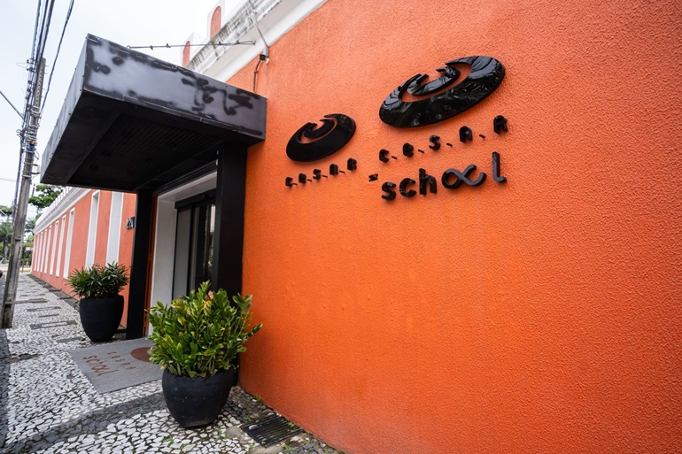
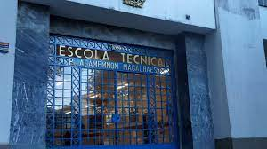

Sobre mim
Aprendizado contínuo - Autonomia - Equilíbrio
Tenho 1 ano e 3 meses de experiência trabalhando na área de infraestrutura, suporte e administração de sistemas, e nesse momento busco uma transição para a área de desenvolvimento
Apaixonado por computadores desde que me entendo por gente, e sempre curioso pra saber como tudo funciona, Comecei a programar com 14 anos em Python, quando descobri as linguagens de programação. Desde então aprendi outras linguagens como Javascript e PHP, e tenho me aventurado em Clojure (uma linguagem funcional que estou amando aprender) além de tópicos mais aprofundados como Programação funcional, TDD (Test driven development), arquitetura de sistemas, coisas que adoro descobrir.
Além da programação tenho alguns outros hobbies, como andar de bicicleta, jogar futebol, videogames (especialmente RPG's como The witcher 3), e outros que não tive a oportunidade de aprender (Velejo e Esgrima).
Minhas formações
Análise e desenvolvimento de sistemas - Cesar School - 2024-Presente
Na school, estou aprofundando ainda mais meus conhecimentos relacionados à programação e possuindo diversas oportunidades de networking dentro do ecossistema do Porto digital, bem como desenvolvendo habilidades como liderança e empreendedorismo, que fazem parte dos valores da instituição, e outras como colaboração, organização e comunicação.
Manutenção e suporte em informática - ETEPAM - 2020-2022
Nessa formação pude descobrir e aprender as mais diversas áreas da computação, como redes de computadores, manutenção, administração de sistemas, infraestrutura e programação. Com isso, obti muita versatilidade e conhecimentos multidisciplinares na área, que me permitem ter uma ótima base como desenvolvedor.